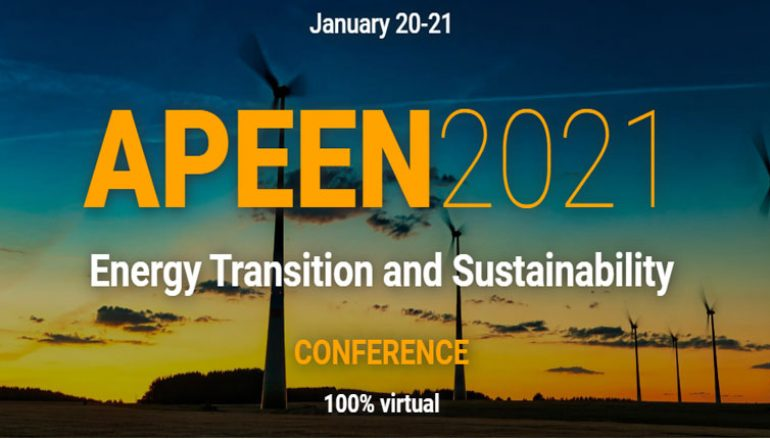
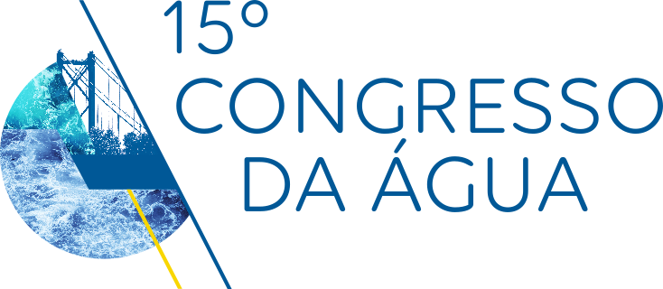

Início
Sobre
Feed
Galeria
Contactos
Cadastro
Login
Início
Sobre
Feed
Galeria
Contactos
Cadastro
Login
Feed
Criar Evento
+
Criar

APEEN 2021 Conferência
A 5ª Conferência Anual da Associação Portuguesa de Economia da Energia (APEEN) é totalmente dedicada a todas as vertentes da Transição Energética e Sustentabilidade. Tem como objetivo reunir os principais cientistas acadêmicos, pesquisadores, inovadores e stakeholders empresariais e sociais, por meio de um contexto interdisciplinar para apresentar, compartilhar e discutir as mais recentes experiências, resultados de pesquisas, inovações e ideias em torno dos múltiplos temas sobre Transição de Energia e Sustentabilidade .
Quarta-Feira
20 de Janeiro de 2021
EcoEvents
APEEN 2021 Conferência
Ver Evento

15º Congresso da Água
O 15.º Congresso da Água é dedicado ao tema “Para uma política da água em Portugal - o contributo da APRH”. (O Congresso presencial ficou agendado para março 2021)
Segunda-Feira
22 de Março de 2021
EcoEvents
15º Congresso da Água
Ver Evento